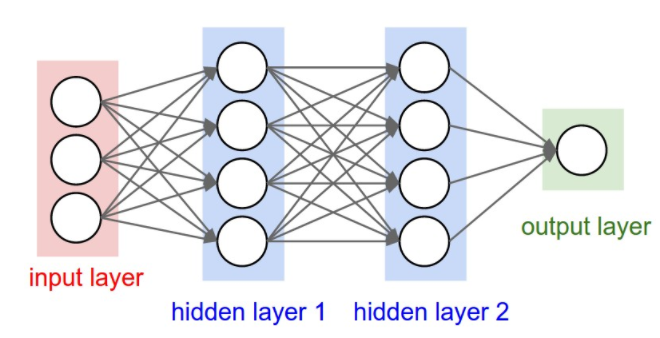
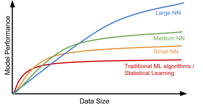
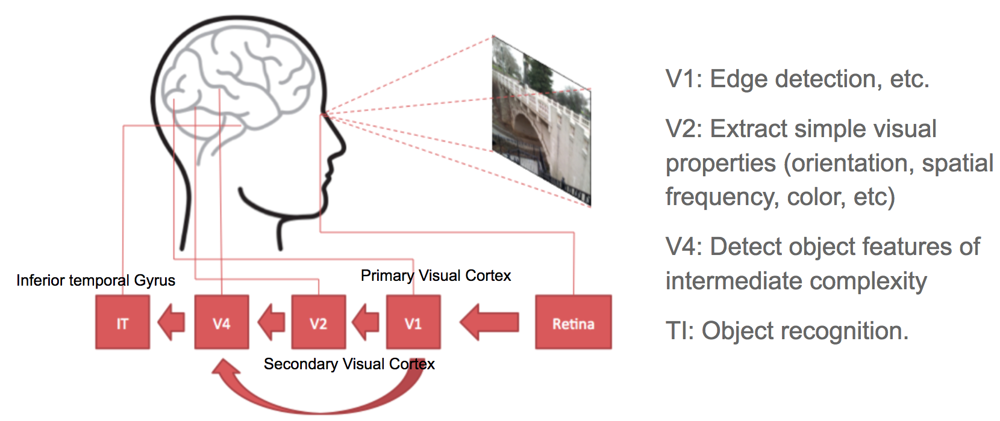
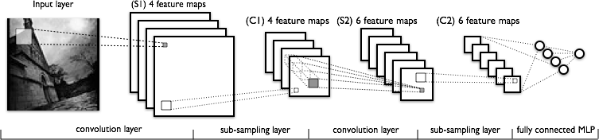
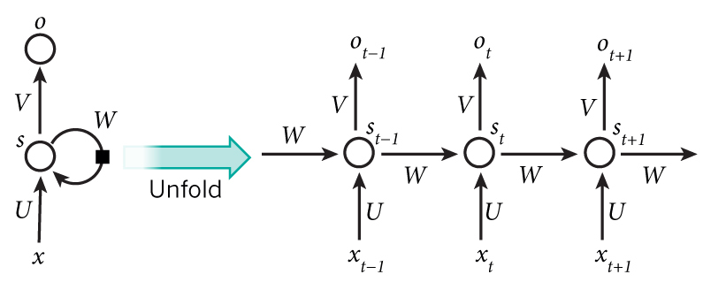
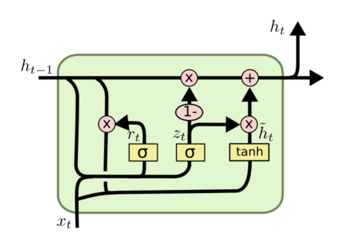
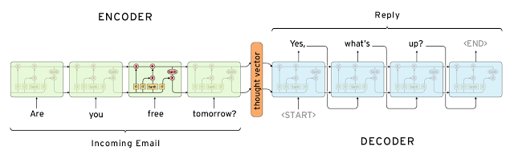
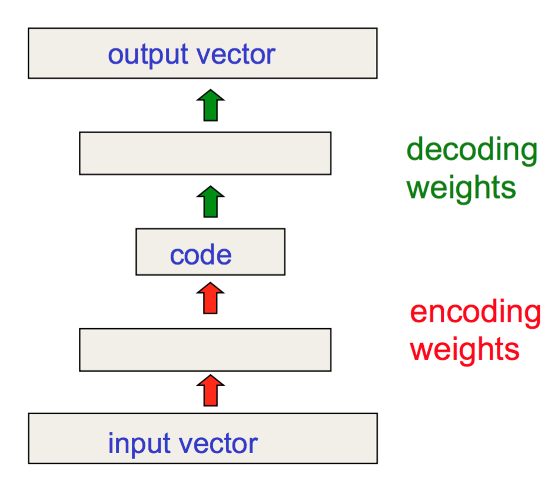
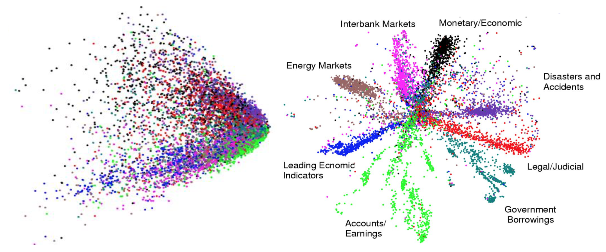
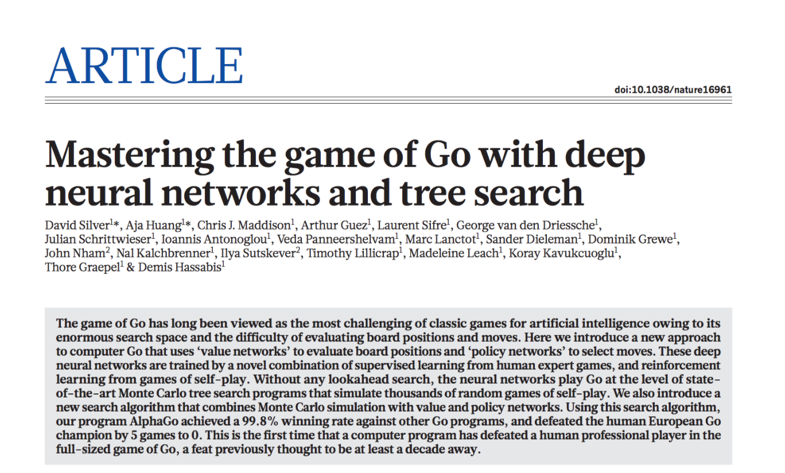

目录
- Why Does Deep Learning Work Now?
- Deep Learning Models Convolutional Neural Network Recurrent Neural Network RNN: Sequence-to-Sequence Model Autoencoders
- Reinforcement (Deep) Learning Generative Adversarial Network
- Toolkits and Libraries
- How to Learn? Useful resources Blog posts mentioned Interesting blogs worthy of checking Papers mentioned
（本文最初源自我在 WiMLDS x Fintech meetup 上由 Affirm 主办的演讲。）
我相信你们很多人已经看过或听说过 2016 年 AlphaGo 与职业围棋手 李世石 之间的对局。比赛视频 李世石拥有九段最高段位，并多次获得世界冠军。毫无疑问，他是世界上最优秀的围棋选手之一，但在这一系列对决中，他以 1:4 的比分 输给了 AlphaGo。在此之前，围棋被认为是计算机难以掌握的游戏，因为其简单的规则能在棋盘上衍生出指数级数量的变化，远超国际象棋。这次事件无疑让 2016 年成为人工智能大放异彩的一年。由于 AlphaGo 的出现，AI 的发展吸引了大量关注。
与此同时，许多公司正在投入资源推动 AI 应用的前沿，这些应用确实有可能改变甚至彻底革新我们的生活方式。熟悉的例子包括自动驾驶汽车、聊天机器人、家庭助手设备等等。近年来我们所取得进步背后的秘诀之一，就是深度学习。
为什么深度学习现在能起作用？
简单来说，深度学习模型就是大型且层数很深的人工神经网络。神经网络（“NN”）可以用 有向无环图 来很好地表示：输入层接收信号向量；一个或多个隐藏层则处理前一层的输出。神经网络的最初概念可以追溯到 半个多世纪前。但为什么它现在才开始发挥作用？为什么人们突然开始大谈特谈？

原因其实非常简单：
- 我们拥有多得多的数据。
- 我们拥有强大得多的计算机。
一个大型且深层的神经网络拥有更多的层数 + 每层更多的节点，这会导致需要调优的参数呈指数级增长。如果没有足够的数据，我们就无法高效地学习这些参数。如果没有强大的计算机，学习过程会太慢且效果不足。
下面这张有趣的图展示了数据规模与模型性能之间的关系，由 Andrew Ng 在他的“应用深度学习的实战技巧”演讲中提出。在小数据集上，传统算法（回归、随机森林、SVM、GBM 等）或统计学习方法表现优秀，但一旦数据规模大幅上升，大型神经网络就会超越其他方法。这部分是因为与传统机器学习模型相比，神经网络模型拥有更多的参数，并且有能力学习复杂非线性模式。因此，我们期待模型能够自主挑选出最有用的特征，而无需过多依赖专家进行人工特征工程。

深度学习模型
接下来，我们来了解几个经典的深度学习模型。
卷积神经网络
卷积神经网络，简称“CNN”，是一种前馈式人工神经网络，其神经元之间的连接模式受到视觉皮层系统组织的启发。初级视觉皮层（V1）从视网膜接收原始视觉输入并进行边缘检测。次级视觉皮层（V2），也称为前纹状皮层，从 V1 接收边缘特征，并提取方向、空间频率、颜色等简单视觉属性。视觉区域 V4 则处理更复杂的物体属性。所有处理过的视觉特征最终流入下颞回（IT）这一最终逻辑单元，进行物体识别。V1 和 V4 之间的“捷径”启发了一种特殊类型的 CNN，即在非相邻层之间建立连接：残差网络（He et al. 2016），其中包含“残差块”，允许某一层的部分输入直接传递给两层之后的组件。

卷积是一个数学概念，在这里指两个矩阵之间的运算。卷积层有一个固定大小的小矩阵，也称为核或滤波器。当这个核在输入图像的矩阵表示上滑动（即卷积）时，它会计算核矩阵中的值与原始图像值之间的逐元素乘法。专门设计的核 可以快速高效地对图像进行模糊、锐化、边缘检测等常见处理。

卷积 和 池化（或图 4 中的“子采样”）层就像 V1、V2 和 V4 视觉皮层单元一样，负责特征提取。物体识别的推理则发生在后面的全连接层中，这些层会使用提取到的特征。
循环神经网络
序列模型通常被设计用于将一个输入序列转换为位于不同领域的输出序列。循环神经网络，简称“RNN”，非常适合这一任务，并在手写识别、语音识别和机器翻译等任务上取得了巨大进步（Sutskever et al. 2011，Liwicki et al. 2007）。
循环神经网络天生就具备处理长序列数据的能力，能够应对上下文随时间展开的任务。模型在每个时间步只处理序列中的一个元素。计算完成后，更新后的单元状态会被传递到下一个时间步，以帮助计算下一个元素。想象一下，一个 RNN 模型逐字符阅读完所有维基百科文章，然后就能根据上下文预测接下来的单词。

然而，简单地将当前输入元素和上一个单元状态进行线性组合的感知器神经元很容易丢失长期依赖关系。例如，我们在一句话开头写“Alice is working at …”，经过整整一段话后，我们希望下一句能正确地用“She”或“He”开头。如果模型忘记了人物名字“Alice”，我们就无法判断。为了解决这个问题，研究者们设计了一种内部结构更加复杂的特殊神经元，用于记忆长期上下文，称为“长短期记忆（LSTM）”单元。它足够智能，能够学会应该记住旧信息多久、何时忘记、何时利用新数据，以及如何将旧记忆与新输入结合。这篇介绍文章写得非常出色，我推荐所有对 LSTM 感兴趣的人都读一读。它甚至已被正式纳入Tensorflow 官方文档 ;-)

为了展示 RNN 的强大能力，Andrej Karpathy 使用带 LSTM 单元的 RNN 构建了一个基于字符的语言模型。在事先不了解任何英语词汇的情况下，模型能够学会字符之间的关系来组成单词，进而学会单词之间的关系来组成句子。即使没有庞大的训练数据集，它也能达到相当不错的表现。
RNN：序列到序列模型
序列到序列模型 是 RNN 的扩展版本，但它的应用领域足够独特，因此我把它单独列为一节。与 RNN 一样，序列到序列模型处理序列数据，但它特别常用于开发聊天机器人或个人助手，为输入的问题生成有意义的回复。一个序列到序列模型由两个 RNN 组成：编码器和解码器。编码器从输入的单词中学习上下文信息，然后通过一个“上下文向量”（或称为“思维向量”，如图 8 所示）将知识传递给解码器。最后，解码器使用这个上下文向量生成合适的回复。

自编码器
与前面几种模型不同，自编码器用于无监督学习。它旨在学习高维数据集的低维表示，类似于 主成分分析（PCA） 的功能。自编码器模型试图学习一个近似函数 f(x) \approx x 来重现输入数据。然而，它受到中间一个瓶颈层的限制，该层的节点数量非常少。由于容量有限，模型被迫形成非常高效的数据编码，这本质上就是我们学到的低维表示。

Hinton 和 Salakhutdinov 使用自编码器来压缩各种主题的文档。如图 10 所示，当 PCA 和自编码器都被用于将文档降维到二维时，自编码器展现出好得多的效果。借助自编码器，我们可以进行高效的数据压缩，从而加快包括文档和图像在内的信息检索速度。

强化（深度）学习
既然本文以 AlphaGo 开头，那就让我们再深入了解一下 AlphaGo 为什么能成功。强化学习（“RL”） 是其成功背后的秘诀之一。强化学习是机器学习的一个子领域，它让机器和软件代理能够在给定环境中自动确定最优行为，目标是最大化由特定指标衡量的长期性能。
